Project Management Institute 6
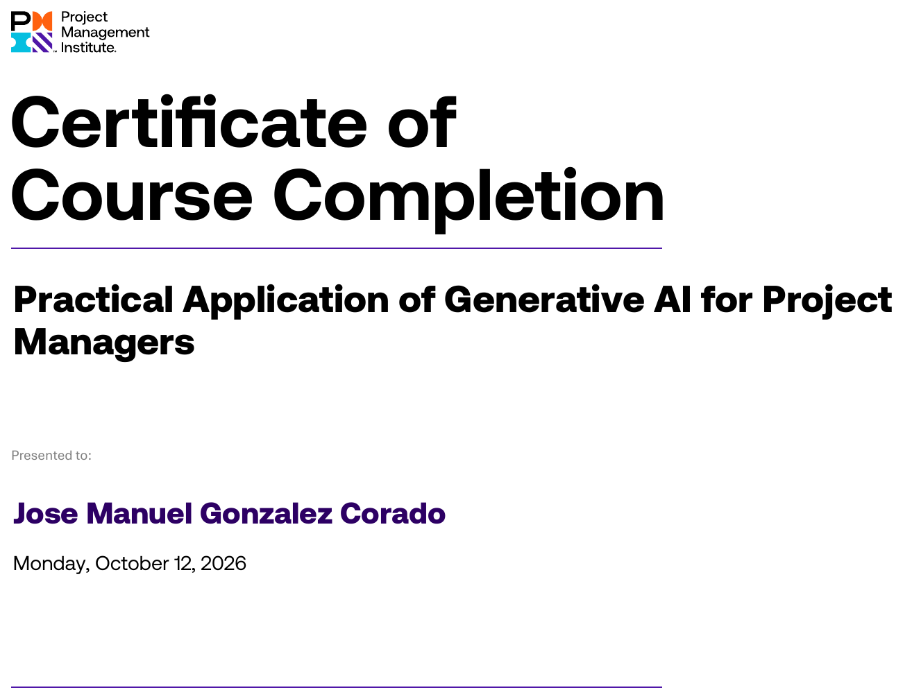
Practical Application of Generative AI for Project Managers12 de octubre de 2026Abrir PDF original
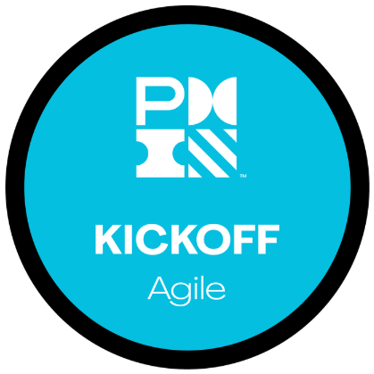
Fundamentals of Agile Project Management (Kickoff Agile)14 de septiembre de 2026Insignia en CredlyVer completo
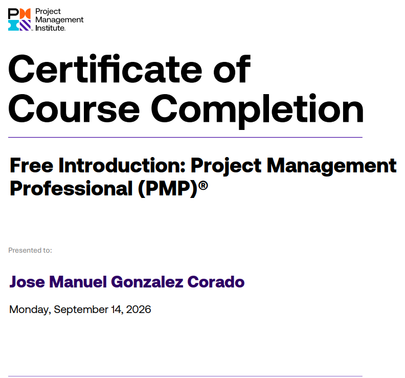
Free Introduction, Project Management Professional (PMP)14 de septiembre de 2026Ver completo
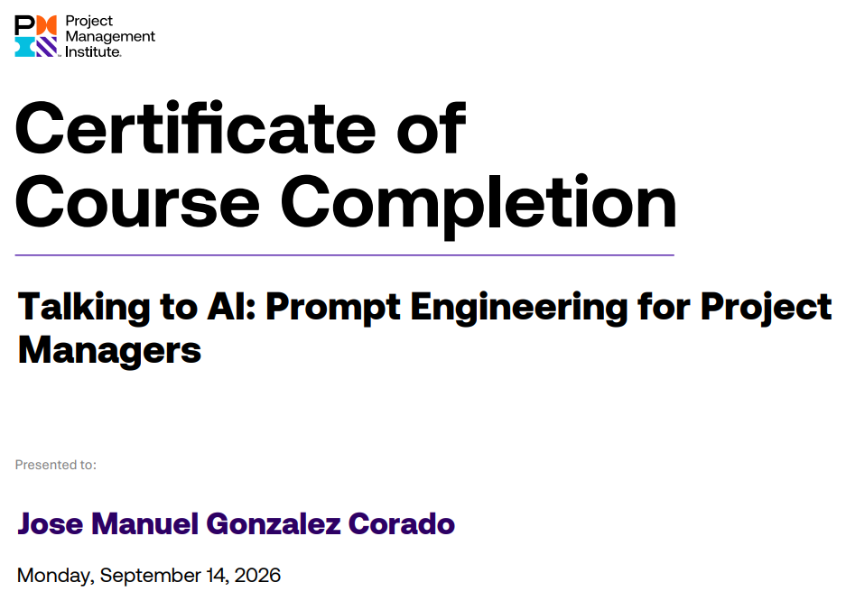
Talking to AI, Prompt Engineering for Project Managers14 de septiembre de 2026Ver completo
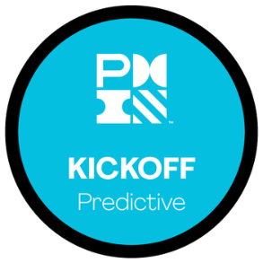
Fundamentos de la Dirección de Proyectos Predictivos (Kickoff Predictive)29 de julio de 2026Insignia en CredlyVerificar en Credly
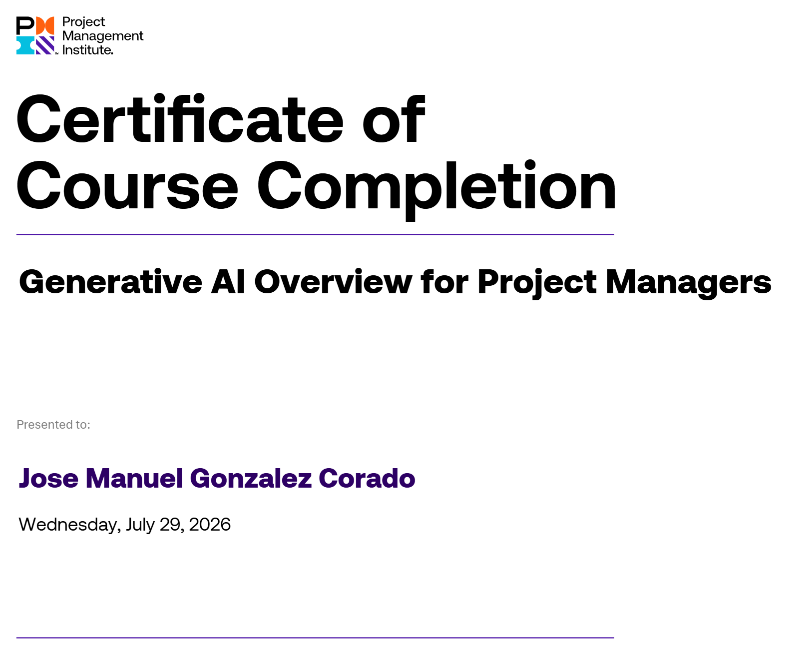
Generative AI Overview for Project Managers29 de julio de 2026Ver completo
Atlassian 3
Agile Academy 1
Simplilearn 1
IBM SkillsBuild 7
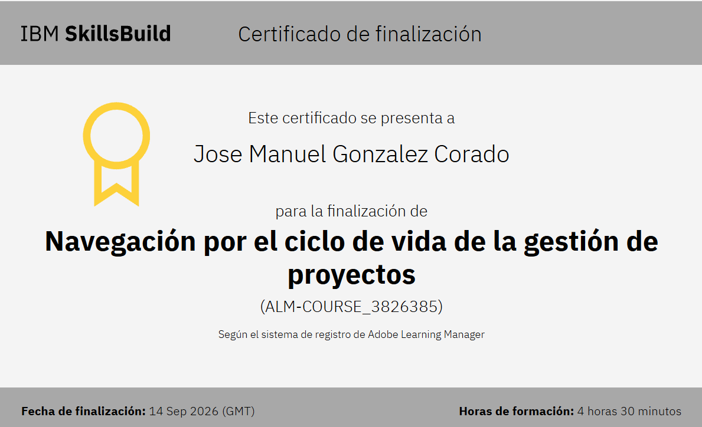
Navegación por el ciclo de vida de la gestión de proyectos14 de septiembre de 20264 horas 30 minutosVer completo
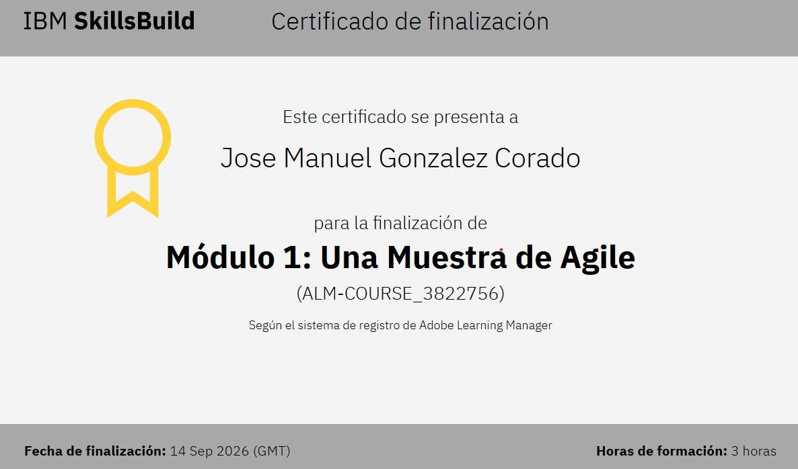
Módulo 1, Una muestra de Agile14 de septiembre de 20263 horasVer completo
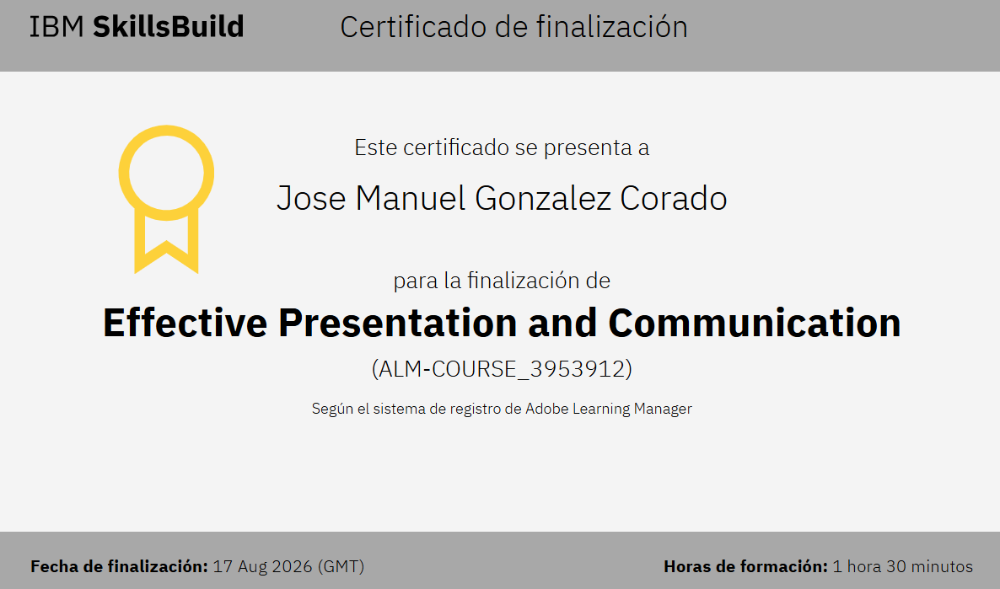
Effective Presentation and Communication17 de agosto de 20261 hora 30 minutosVer completo
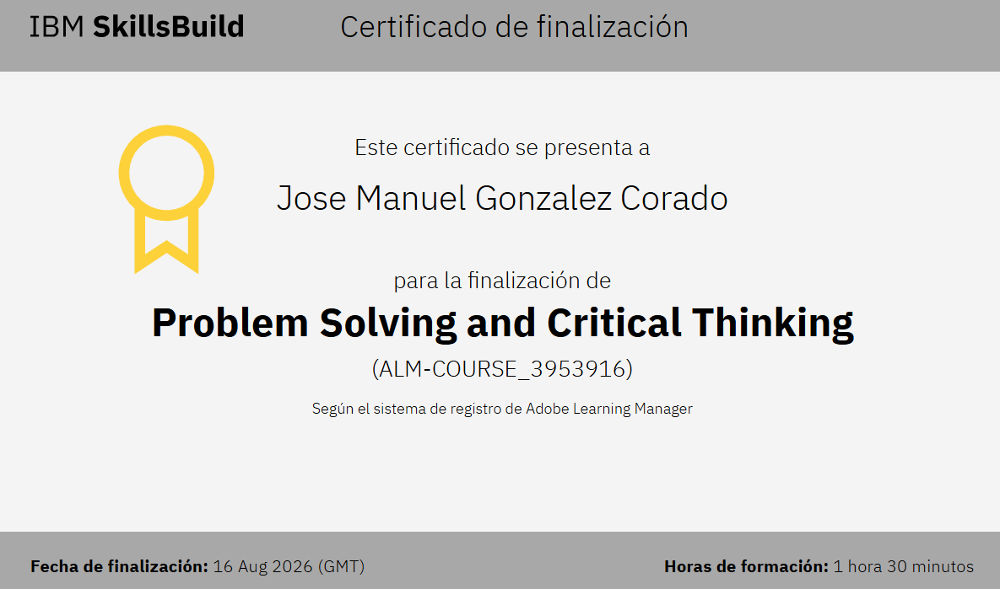
Problem Solving and Critical Thinking16 de agosto de 20261 hora 30 minutosVer completo
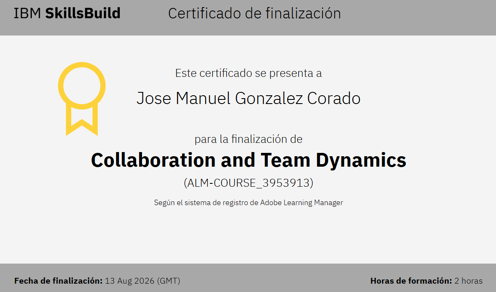
Collaboration and Team Dynamics13 de agosto de 20262 horasVer completo
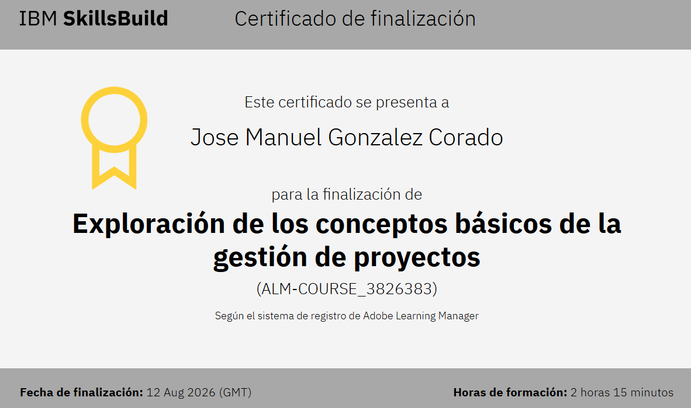
Exploración de los conceptos básicos de la gestión de proyectos12 de agosto de 20262 horas 15 minutosVer completo
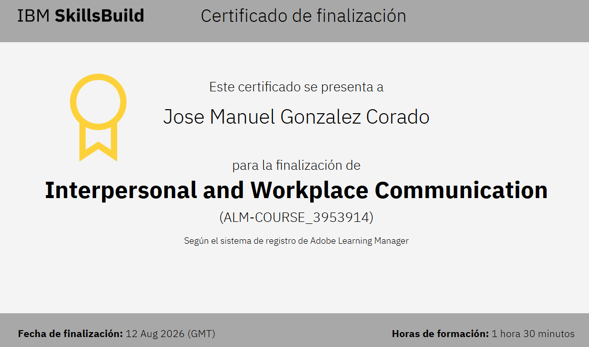
Interpersonal and Workplace Communication12 de agosto de 20261 hora 30 minutosVer completo